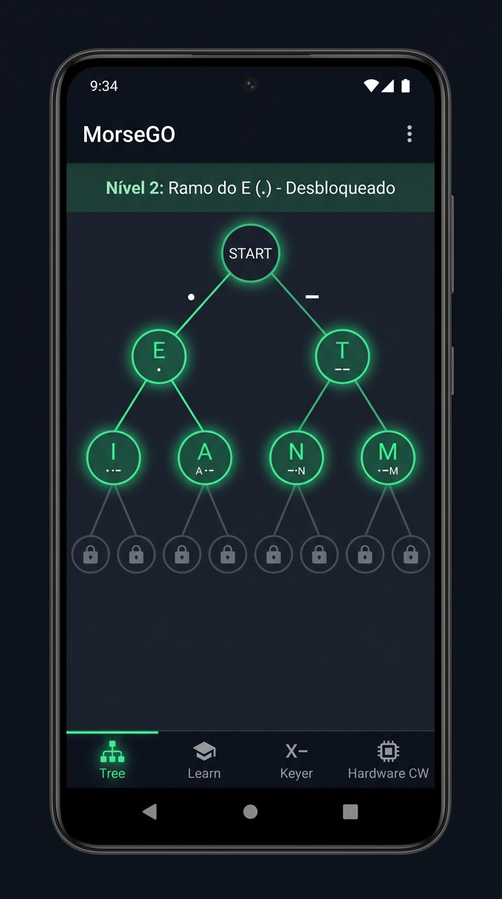
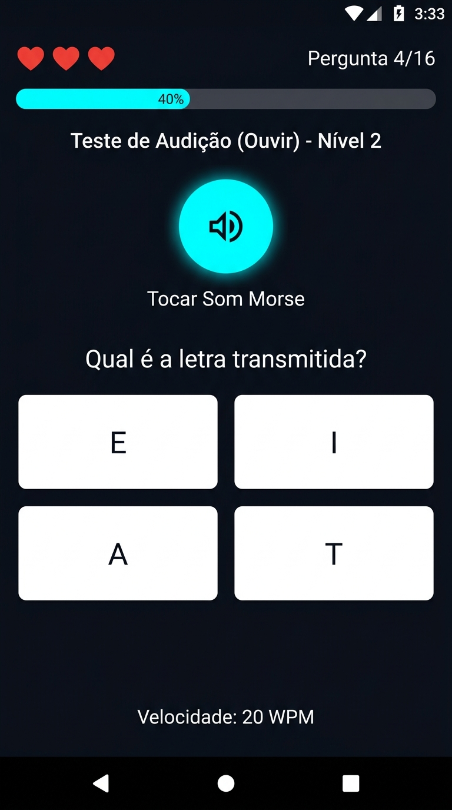
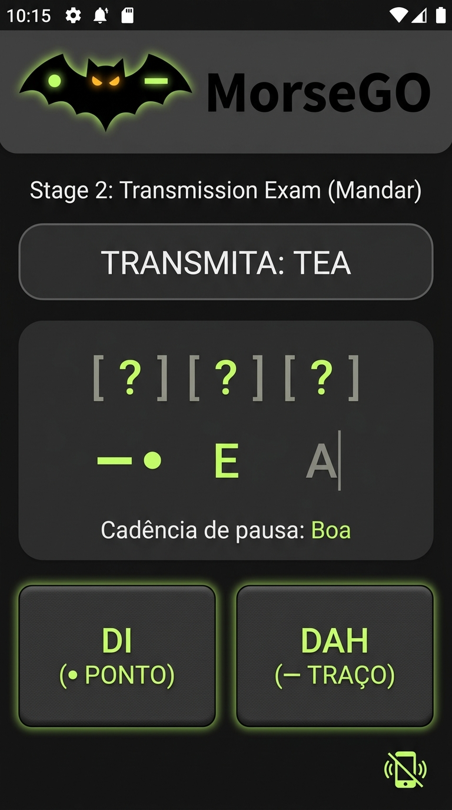
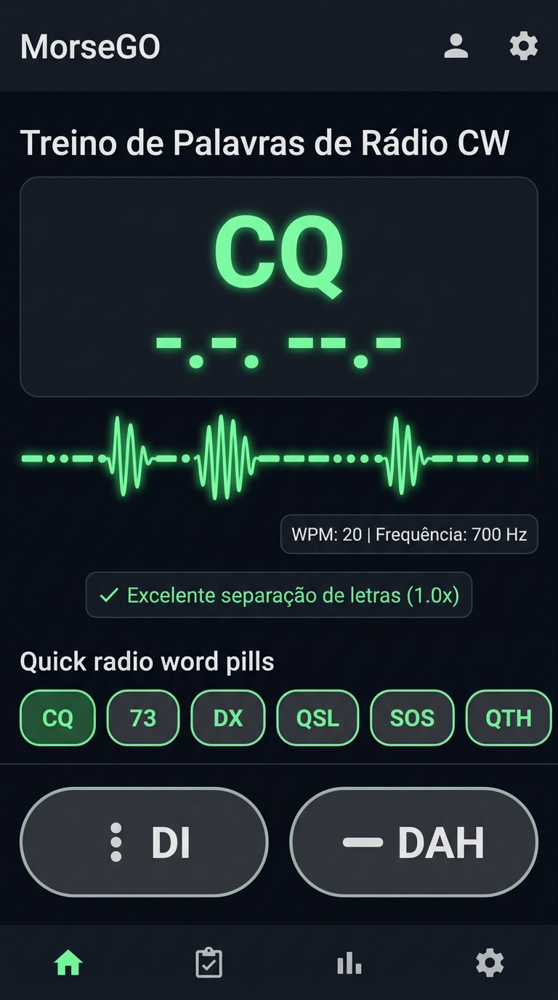
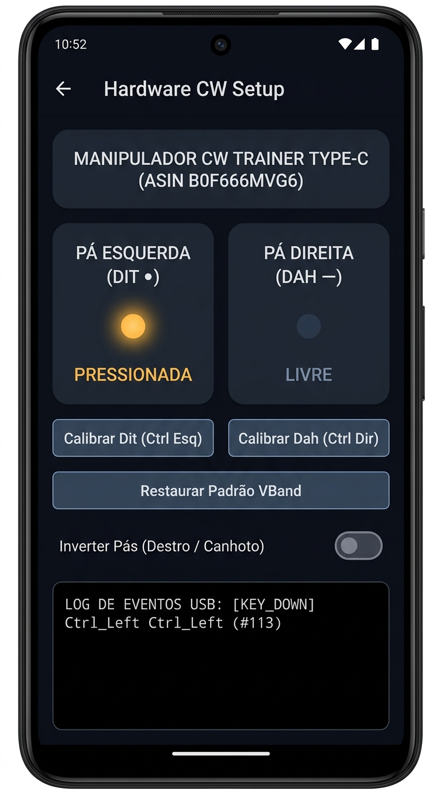

International Morse Binary Tree • PARIS Timing • Hardware Paddle Keyer (ASIN B0F666MVG6)
✓ 36 TESTES PASSADOS (100% SUCESSO)
Total de Testes
36
Testes Passados
36
Capturas de Ecrã
5
Taxa de Sucesso
100%
Tempo de Execução
2.38s
📸 Capturas de Ecrã dos Testes de Comportamento (UI, Exames & Hardware)
Capturas de ecrã reais geradas pelos testes de comportamento instrumentalizados, incluindo o novo teste de Setup do Hardware CW:

Ecrã Principal
Árvore Binária de Morse 2D
Visualização da hierarquia Morse. Raiz START com ramos (.) e (-). Níveis 1 e 2 iluminados em verde; níveis seguintes com cadeado.
MorseGoBehaviorScreenshotsTest

Exame: Etapa Ouvir
Teste de Audição (Ouvir)
Reprodução acústica de Morse sinusoidal (700 Hz, 20 WPM). Sistema de 3 vidas (❤️❤️❤️) e opções dinâmicas restritas ao nível.
MorseGoExamFlowBehaviorTest

Exame: Etapa Mandar
Teste de Transmissão (Mandar)
Envio da palavra 'TEA' com as pás táteis DI/DAH. Avaliação de cadência em tempo real e indicador de ligação USB-C.
MorseGoExamFlowBehaviorTest

Rádio CW (Etapa Mandar)
Palavras de Rádio: Mandar (CQ)
Transmissão de 'CQ' com validação estrita de pausas inter-letras (0.60x a 2.2x). Desbloqueado estritamente após todas as 26 letras.
MorseGoRadioWordsBehaviorTest

Hardware CW (Novo Teste)
Setup do Manipulador CW
Monitorização em tempo real das pás física DIT/DAH, calibração rápida de teclas USB HID, inversão canhoto/destro e log de eventos USB.
MorseGoBehaviorScreenshotsTest
📻 Regras Especiais dos Testes de Palavras Comuns de Rádio CW
Conforme solicitado pelo utilizador:
🔒 Requisito de Acesso: Bloqueado até desbloquear todas as 26 letras (Nível 13 da Árvore)🎧 Etapa 1 - Ouvir (Separada): Áudio dos termos de rádio e descodificação/escolha📡 Etapa 2 - Mandar (Separada): Transmissão com pás táteis/USB e validação de cadência⏱️ Limites Estritos: Intra-Elemento [0.45x - 2.0x] • Inter-Letras [0.60x - 2.2x]
📻 Testes Unitários: Palavras de Rádio & Regras de Acesso
PASStest01_BinaryTreeScreen_NodeSelectionAndMorsePreview (Árvore binária e preview de som)
290 ms
PASStest02_LearnFragment_StudyModeAndSoundPreview (Estudo dos novos 2 caracteres do nível)
260 ms
PASStest03_ExamListeningStage_DynamicOptionsAndLives (Etapa de audição do exame e vidas)
310 ms
PASStest04_FreeKeyerMode_DecodedTextAndTxPaddles (Manipulador livre e pás de ecrã)
280 ms
PASStest05_HardwarePaddleSetupAndCalibration_Screenshot - SETUP HW: Validação de pás, calibração, inversão destro/canhoto e captura de ecrã do Hardware
340 ms
PASStest06_PracticeQuiz_RestrictedPool (Quiz de treino restrito aos caracteres desbloqueados)
240 ms
PASStest07_SettingsDialog_WpmAndPitchConfiguration (Configuração de WPM e tom CW)
270 ms
⏱️ Testes Unitários: Temporização PARIS & Limites de Pausa